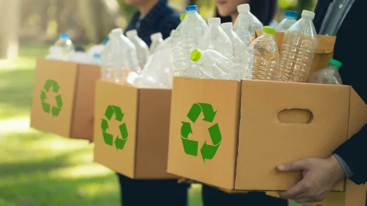
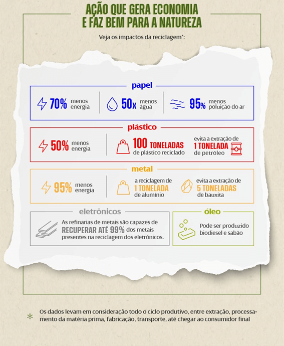

O que é reciclagem?

Reciclar significa recuperar parte reutilizável de produtos consumidos com o objetivo de reintroduzi-los no ciclo de produção original ou na criação de novos objetos a partir dessa matéria prima. É através da reciclagem que é possível transformar o que seria descartado em algo completamente novo que pode ser reutilizado em diversas atividades, e ainda gerar diversos benefícios ao meio ambiente e à sociedade.
O que pode ser reciclado?
Há cinco tipos de resíduos que podem passar pelo processo de reciclagem:
- Papel: papelão, caixas em geral, papel escritório, jornais, revistas, livros,
cadernos (sem espiral e sem capa); - Plástico: sacos plásticos, embalagens de produtos de limpeza, garrafa PET, baldes,
bacias, mesas plásticas; - Metal: latas de alumínio (refrigerante, suco, cerveja), latas de produtos alimentícios
(óleo, leite em pó, conservas) e folha de flandres; - Óleo vegetal: óleo de cozinha, material deve ser entregue filtrado e armazenado em garrafas
PET transparente; - Eletrônico: CPU/gabinete com placa mãe, notebook, DVD, televisores, monitores, celular, tablet,
teclado, mouse, impressoras, rádio, ventilador, copiadores etc.
Qual é a importância e os benefícios da reciclagem por material?
A reciclagem é importante pois traz uma série de benefícios à sociedade, já que incentiva uma atividade rentável, que gera novos empregos e reduz a quantidade de lixo não reciclável enviados aos aterros sanitários ou depósitos, prolongando a vida útil desses locais. Os materiais após sua reciclagem também não demandam tanta energia ao serem remanufaturados (se comparado às novas matérias-primas), refletindo em mais economia à população. Já para o meio ambiente, ela é responsável pela diminuição da utilização de fontes naturais, muitas vezes não renováveis, e da quantidade de resíduos no tratamento final, como aterramento ou incineração. A reciclagem é capaz ainda de minimizar o acúmulo de resíduos durante a produção de novos materiais, como o corte de árvores para a fabricação de papeis, ou as emissões de gases e as agressões ao solo. Cada material tem ainda sua importância individual ao ser reciclado. Veja abaixo:

Fonte: Neoenergia